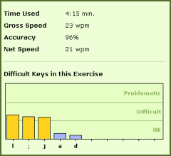

Kirjoitustarkkuus kertoo sen, kuinka virheetöntä tekstiä pystyt kirjoittamaan. Mitä korkeampi tarkkuutesi on, sitä vähemmän olet tehnyt kirjoitusvirheitä. 100 %:n tarkkuus tarkoittaa, ettet ole tehnyt lainkaan virheitä. Sujuvan kirjoituksen kehittymiseksi on hyvä tavoitella vähintään 85 %:n tarkkuutta kaikissa harjoituksissa. TypingMasterissa käytettävät tarkkuustavoitteet ovat 85 % (helppo), 90 % (keskitaso) ja 95 % (edistynyt). |
 |